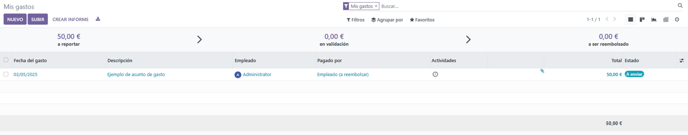
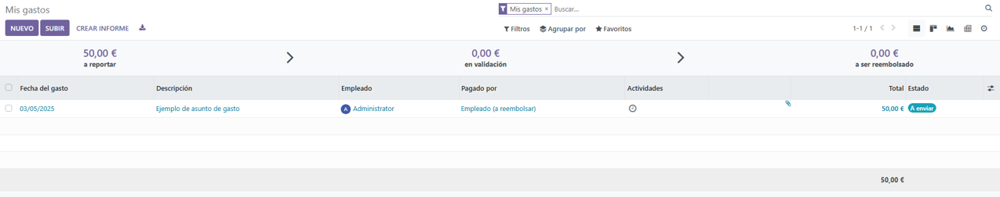

Módulo de Gastos
Sistema completo para la gestión, aprobación y pago de gastos de empleados.
Activación del módulo
Paso 1: Activar módulo
Desde "Configuración" > "Módulos", buscaremos y activaremos el módulo de Gastos.
Creación de un gasto
Paso 1: Acceder al menú de gastos
Selecciona "Gastos" en el menú principal para ver las opciones disponibles. Las dos opciones principales que tenemos son las siguientes:
- Nuevo: Esta opcion nos permite crear un gasto nuevo desde cero.
- Subir: Esta opcion nos permite subir un gasto ya existente en nuesto equipo.
Paso 2: Crear nuevo gasto
Haremos clic en "Nuevo" para comenzar a crear el nuevo gasto. Dentro nos pedira rellenar los siguientes campos:
- Categoria
- Fecha del gasto
- Total
- Impuestos incluidos (opcional)
- Empleado al que atribuir el gasto
- Pagado por:
Paso 3: Guardar y enviar
Una vez completado, el gasto se guardara automaticamente y podremos comprobarlo accediendo al menu de informe de gastos.
 

Proceso de aprobación
Paso 1: Crear informe de gasto
Para poder continuar con el estado del gasto entraremos a dicho gasto y deberemos de crear un informe. En este informe deberemos de poner distintos datos como el empleado y el gerente al que hay que enviarlo.
Paso 2: Revisión del gerente
Una vez enviado, si accedemos como gerente podremos ver el informe del gasto y podremos decidir si aprobamos o rechazamos el gasto.
Paso 3: Aprobación
En caso de aprobarlo a continuación deberemos de crear el registro del gasto.
Paso 4: Rechazo
En caso de rechazarlo, nos aparecera esta pestaña emergente y deberemos de agregar un motivo al rechazo del gasto.
Registro y pago
Paso 1: Registrar gasto aprobado
En caso de aprobarlo a continuación deberemos de crear el registro del gasto.
Paso 2: Realizar el pago
Y una vez creado el registro procederemos a registrar el pago. Nos aparecerá esta pestaña emergente con los datos del importe, la fecha y demás datos. Una vez comprobemos que sean correctos crearemos el pago.
Paso 3: Comprobación
Por último veremos el informe anterior y nos aparecerá como ya pagado.
Paso 4: Historial de los procesos
Mientras creamos todo este proceso a la derecha de la pantalla nos aparecerá un registro con todos los pasos realizados en dicho pago, junto con la fecha de cada avance de estado.
Paso 5: Historial de los procesos
Por último veremos los informes y veremos el gasto no pagado (el anterior informe de prueba) y el gasto pagado (este último informe).